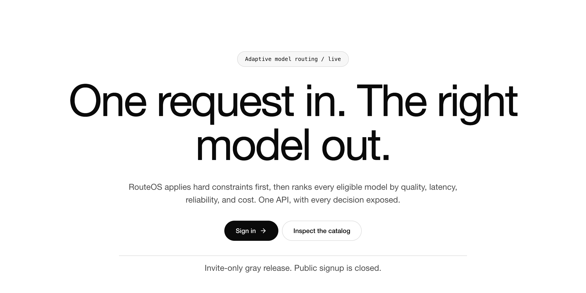
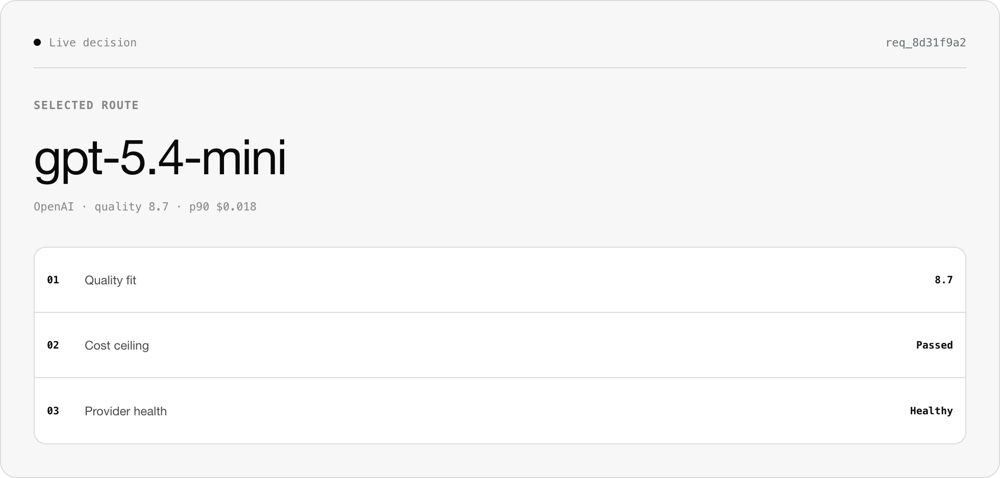

Remove ineligible routes.
Hard requirements such as capabilities and request limits are evaluated before a model can enter the ranked set.
Recent software product · Invite-only gray release
RouteOS is a recent product I built to route one request to an eligible model through a transparent control plane. It applies hard constraints first, then ranks the remaining models by quality, latency, reliability, and cost.

Product problem
Applications need more than a static provider choice. A request may require particular capabilities, a cost ceiling, dependable provider health, or a different quality and latency balance. RouteOS makes those requirements part of an explicit routing decision instead of scattering them across application code.
Routing loop
The control plane keeps eligibility separate from preference: a model must satisfy the request before its expected utility can influence the final route.
Hard requirements such as capabilities and request limits are evaluated before a model can enter the ranked set.
RouteOS weighs expected quality, latency, reliability, and cost rather than optimizing one signal in isolation.
The application can use the standard OpenAI SDK, point it to RouteOS, and request model: auto.
The normalized response includes decision metadata so the selected upstream model and routing result remain inspectable.

Decision transparency
RouteOS exposes why a model was selected instead of treating routing as an invisible gateway behavior. Operators can inspect decision metadata, usage, the exact charge, model availability, and provider health from the same product surface.
Feedback control
Catalog priors establish a starting point; observed signals make the router more specific to the work passing through it.
Ratings and accept-or-reject signals contribute evidence about how a model performed for a task.
Follow-up interaction can provide an additional outcome signal for future recommendations.
RouteOS retains numeric quality, token, cost, and routing metadata for analysis without permanently storing prompt content.
Operator surfaces
Issue and manage application credentials without embedding provider-specific routing logic in each product.
Review routed calls, decision context, token use, and final charges in one request history.
Inspect enabled models, capabilities, pricing, availability, and provider credential health.
Reserve the maximum charge before a request, then settle against actual usage in a per-request ledger.
Current release boundary
RouteOS is currently invite-only and public registration is closed. The live site presents the product and routing model without implying customer scale, performance benchmarks, or general availability.